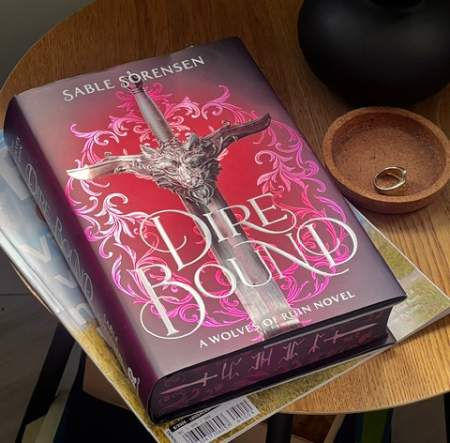
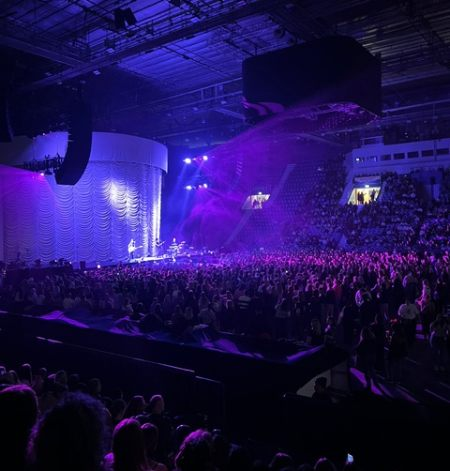

Böcker, musik och lite av allt däremellan
Vad gör jag helst när jag är ledig? För mig är svaret väldigt enkelt-jag läser eller lyssnar på musik. Ibland så är det båda samtisigt. Läsning och musik är en stor del av mitt liv och tar upp en stor del av min fritid, utöver tiden som jag spenderar med min familj och vänner. Dessa hobbys hjälper mig att koppla av, men har samtidigt blivit en viktig del i min vardag.
Läsning
Läsning är ett av mina största intressen. Jag läser nästan varje dag, det är både för att kunna försvinna in i en annan värt och för att få chansen att koppla bort från omgivningen. Bäcker ger mig mig även mer än bara avkoppling,det har hjälpt mig att bland annat utvecklat min ordförståelse samt blivit bättre på engelska då jag främst läser på engelska.
Jag läser främst fantasi böcker men det kan också vaijera mellan däckare, skräck eller romaner.

Musik
Sen har vi musik-musik är något som alltid förekommer i min vardag. Oavsätt om jag vill slappna av, fördriva tiden eller om jag är påväg någonstans så finns musiken alltid där. Musiken har för mig inte varit ett tidsfördriv utan ett sätt att hitta kopplingar till andra människor. Jag och min kusin Sofie har som exempel en tradition att åka på konserter jorden runt, både för att få uppleva nya saker, träffa människor och skapa mya minnen, men också för att kunna träffa varandra.

Min musiksmak däremot kan man minst sagt kalla för varierande. Jag lyssnar på allt från pop till rock och country samt allt där emellan. Därför är det inte ovanligt för mig att upptäcka låtar och artister från världens alla hörn. Därmed är det inte konstigt att jag känner igen flertal låtar från världens största artister och gruppen.